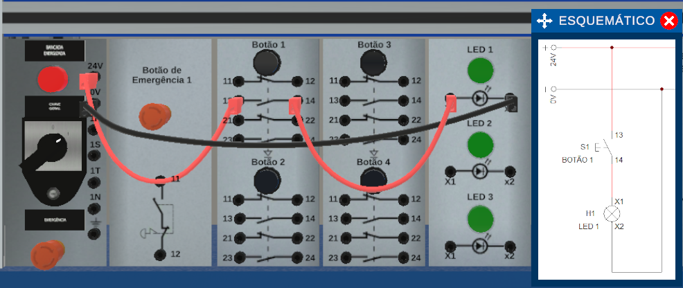
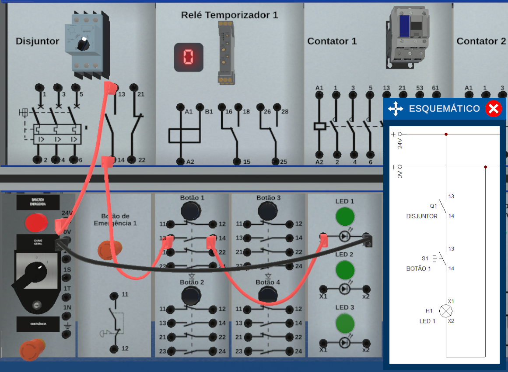
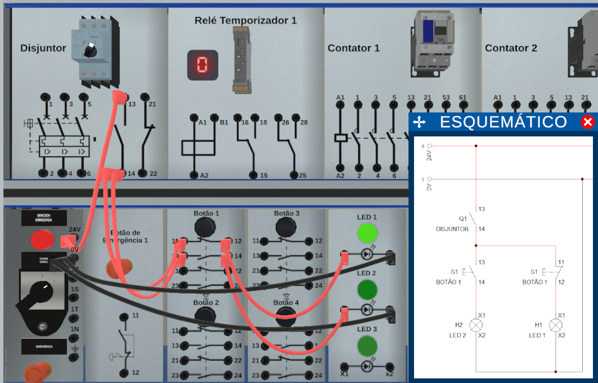

Projetos do Laboratório Digital
Todas as 12 simulações elétricas feitas no Laboratório Digital e no Cade_Simu mostrando a descrição junto com o funcionamento
Prática 1
A pratica 1 é o acionamento de um LED direto, bem simples

Prática 2
A pratica 2 é o acionamento de um LED utilizando um disjuntor para proteger, abrir e desligar o circuito de passagem da corrente elétrica

Prática 3
A prática 3 é o acionamento de um LED utilizando o botão NA e NF. enquanto um led está ligado, o outro fica desligado.

Prática 4
A prática 4 é o acionamento de um LED utilizando contator